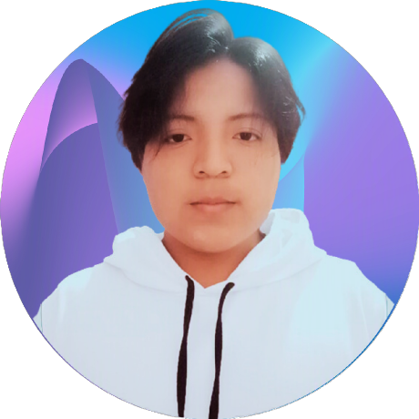

David Rivera
David-RS-Dev
Líder del equipo
30 de agosto del 1993
Estudiantes responsables del desarrollo del álbum virtual mundialista.
David-RS-Dev
Líder del equipo
30 de agosto del 1993

Stalyin
Desarrollador
2 de enero del 2003
Sonicse2099
Desarrollador
6 de agosto del 2003
xavopalacios
Desarrollador
Victor-DREC
Desarrollador
El proyecto puede trabajar con ramas para mantener ordenado el desarrollo grupal.
Cada integrante trabaja su grupo en una rama propia para evitar choques.
Contiene la versión estable del proyecto, lista para presentar o desplegar.
Recibe avances antes de unirlos a main y ayuda a probar cambios.